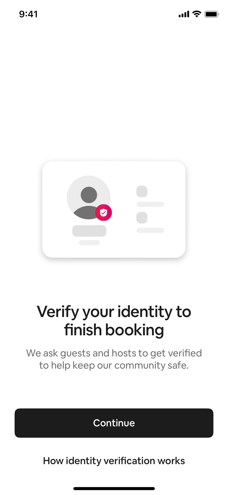
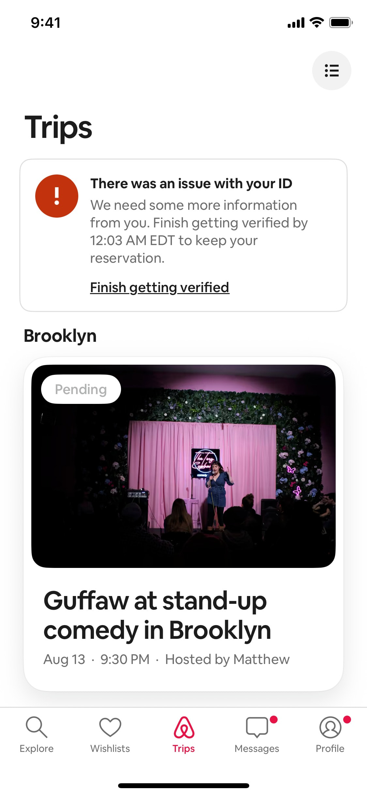
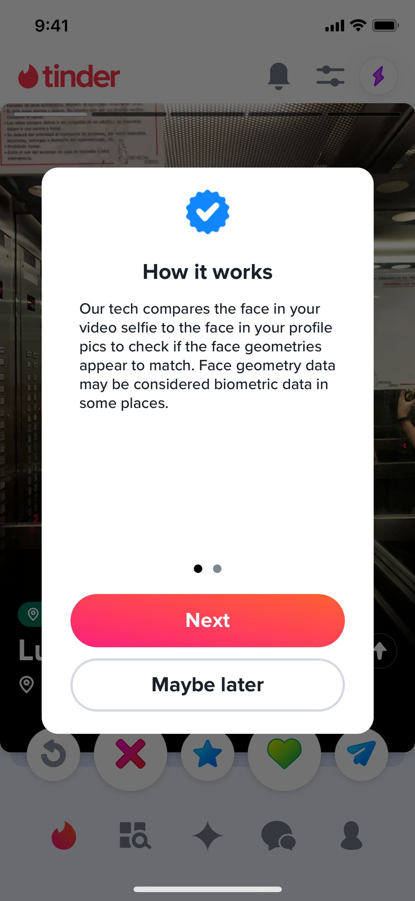
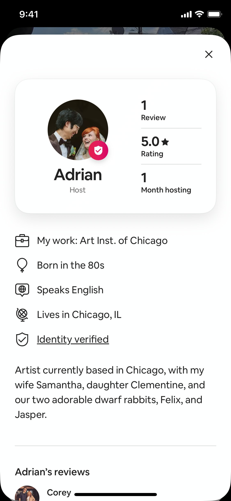
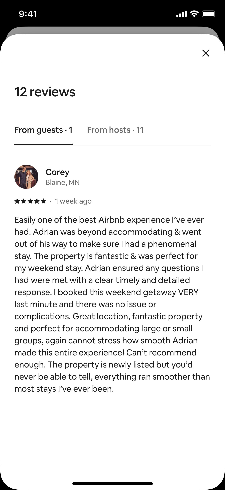
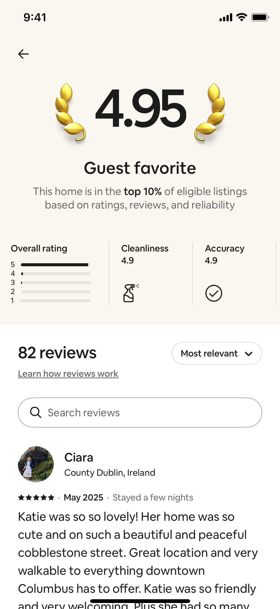
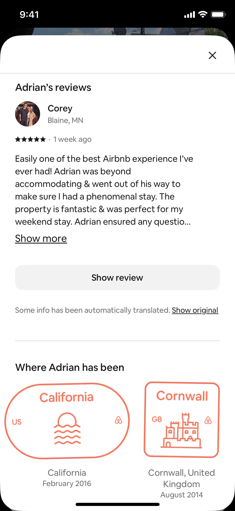
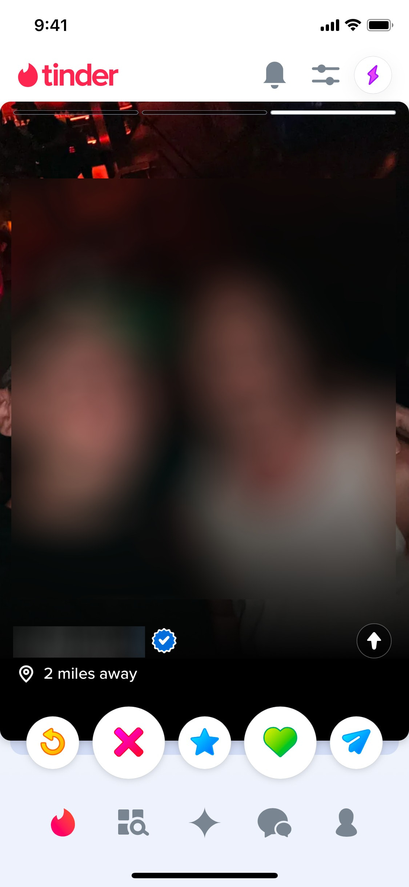

Куток · дослідження перед проектуванням
Ресерч: конкуренти, бенчмарк довіри, патерни
Пошук співмешканців і вільних кімнат у Києві. Кабінетний ресерч зібрано трьома рівнями, від конкретного до абстрактного. Факт без джерела — це гіпотеза, такі позначено [?].
- ✓ Конкуренти: три групи, матриця, патерни ринку готово
- ✓ Бенчмарк довіри: 7 критеріїв × 5 еталонів готово
- ✓ Патерни: 5 механізмів, свідомий вибір готово
- ✓ Висновки: 4 gaps + гіпотези R1–R5 готово
- 05 Скріни конкурентів через Playwright в роботі
Конкуренти
Хто навколо і як вирішує ту саму задачу. Головний конкурент за звичкою — не продукт, а неформальні канали: безкоштовні, швидкі, з нульовою довірою. Куток конкурує з відсутністю продукту.
Три групи
Хард — той самий продукт, та сама аудиторія, Київ
Софт — інший продукт, той самий JTBD «знайти, з ким і де жити»
Аспіраційні — міжнародні еталони категорії
Матриця: п'ять продуктів за п'ятьма осями
| Вісь | SpareRoom · UK/US | Roomi · US | Badi · EU | Flatfy · UA | OLX · UA |
|---|---|---|---|---|---|
| Аудиторія | 25–34, активний ринок оренди; 74% шукачі | молоді професіонали і студенти, NYC та Chicago; переїзд у нове місто | 22–35, «покоління орендарів» дорогих міст ЄС | весь ринок нерухомості UA; ситуативно ВПО з 2022 | всі вікові групи; кімнати — бюджетний сегмент |
| Основа | дошка оголошень з профілями; 20+ років | mobile-first app з алгоритмом сумісності; безпека як core value | marketplace з ML-матчингом; 2024 — перехід на свайп | мета-пошук: агрегує 50+ сайтів, не власні оголошення | загальний класифайд; кімнати — одна з категорій |
| Механізм | двосторонній контакт + Buddy Up (двоє шукають разом); 7-денне ексклюзивне вікно (paywall) | анкета сумісності → алгоритм → фільтри (стать, куріння, тварини, розклад, район) | свайп по кімнатах і профілях + AI-рекомендації | пошук по агрегованому + map view; без профільного матчингу | пошук за ціною і районом; без матчингу й сумісності |
| Довіра | опційна верифікація Onfido ($15): ID + селфі + кримінальні реєстри; модерація 7 днів/тиждень | обов'язкове фото + GlobaliD (телефон, email, ID); опційний кримінальний чек Garbo; 24/7 модерація | підтвердження банківського рахунку → бейдж Trusted User; без верифікації особи | алгоритм виявлення фейків; без власного рівня довіри | рейтинг продавця (2024); партнерство з Кіберполіцією; без верифікації особи |
| Монетизація | freemium з часовим paywall: 7 днів £14, 28 днів £28; Bold Ads | freemium, 5 повідомлень/день; Premium $29.99/міс | per-listing: Badi Gold €19.99/30 днів, без автоподовження | неясно; ймовірно B2B з джерельних сайтів | безкоштовне розміщення + платні бусти; B2B для агентств |
Що спільного 3 патерни ринку
- Довіра зведена до бейджа, а не процесу.
Значок не пояснює, що саме перевірено. Користувачі не розрізняють «підтверджений телефон» і «перевірено по реєстрах» — дизайн платформ не розрізняє рівні довіри.
- Монетизація тисне на шукача, а не на господаря.
SpareRoom і Roomi беруть гроші з шукача (paywall, ліміт повідомлень), господар розміщує безкоштовно. Наслідок: господарі погано мотивовані заповнювати профіль.
- Комунікація виходить з платформи — і всі з цим миряться.
Жоден конкурент не утримує розмову після першого контакту. Платформа втрачає сигнали якості матчу і не може захистити від шахрайства далі.
Де розходяться 3 ставки гравців
- Профіль людини проти профілю кімнати.
SpareRoom і Roomi вкладають у людину (інтереси, спосіб життя, сумісність), Badi та OLX — у кімнату (фото, ціна, адреса). Для Кутка з довірою як core value ставка на людину виглядає правильною.
- Одноразова покупка проти підписки.
Badi: per-listing без автоподовження — нижча тривога, відповідає поведінці господаря. SpareRoom і Roomi: підписка — стабільніший дохід, вищий бар'єр.
- Провал LUN «Сусіди» — прямий сигнал ринку.
Найсильніший гравець UA-нерухомості запустив і закрив окремий продукт для підселення. Або ринок не дозрів, або продукт будували як агрегатор нерухомості, а не як продукт довіри між людьми.
Питання до PM
- Будуємо «кімната → людина» чи «людина → людина»?
Це визначає перший екран, структуру картки і що видно без авторизації. Для довіри логічна «людина → людина», але це ускладнює залучення господарів.
- Верифікація: обов'язкова чи опційна, і хто платить?
SpareRoom: платна й опційна ($15) → лише ~20% верифікованих. Якщо довіра — диференціація, а верифікація опційна, отримаємо OLX з кращим UI. Де мінімальна планка для MVP?
- Що сталось із LUN «Сусіди»?
Причина закриття невідома з відкритих джерел. Розмова з кимось із команди LUN може заощадити місяці роботи.
Дата дослідження: червень 2026. Джерела: сайти продуктів, UX-кейс-стаді, AIM Group, TechCrunch, BBB. Повна версія: competitors.md. Скріни конкурентів — [?] TODO Playwright.
Бенчмарк довіри
Один вимір: довіра до профілю співмешканця до першого контакту. Бенчмарк ≠ конкуренти: дивимось, хто робить цей вимір найкраще — у будь-якій категорії. Оцінки авторські, на основі джерел.
7 критеріїв шкала 1–5
- Глибина верифікації особи
документ + біометрія, не лише email
- Обов'язковість до контакту
чи можна взаємодіяти без верифікації
- Зрозумілість бейджа
чи видно, що саме перевірено
- Двосторонні відгуки
після взаємодії
- Повнота профілю як сигнал
completeness, стимули заповнити
- Сигнали активності
response rate, last seen
- Безпека першого контакту
комунікація в платформі, модерація, репорт
Еталони
Оцінка
| Критерій | Airbnb | Bumble | Couchsurfing | BlaBlaCar | TaskRabbit |
|---|---|---|---|---|---|
| Глибина верифікації | 5 | 4 | 4 | 3 | 5 |
| Обов'язковість до контакту | 5 | 3 | 2 | 3 | 5 |
| Зрозумілість бейджа | 4 | 3 | 3 | 4 | 2 |
| Двосторонні відгуки | 5 | 1 | 5 | 5 | 4 |
| Повнота профілю як сигнал | 4 | 3 | 4 | 5 | 3 |
| Сигнали активності | 4 | 2 | 4 | 5 | 4 |
| Безпека першого контакту | 5 | 4 | 3 | 4 | 4 |
| Разом | 32 | 20 | 25 | 29 | 27 |
Топ-3 механізми → у MVP
- Обов'язкова безкоштовна верифікація до першого контакту.
Airbnb-модель (верифікуються обидві сторони) у реалізації рівня Bumble: телефон + селфі-перевірка фото. Платна опційна модель дає ~20% покриття — цього мало, якщо довіра і є диференціація.
- Бейдж з розшифровкою.
На профілі видно, що саме перевірено: телефон ✓ / фото ✓ / документ —. Airbnb пояснює це окремим екраном; жоден конкурент так не робить.
- Повнота профілю як видимий сигнал.
Completeness-індикатор на картці + підказки до 100%. Підстава: 88% довіри повним профілям у BlaBlaCar — майже рівень друзів.
Не спрацює
Кримінальний background check через третю сторону
TaskRabbit/Checkr, Roomi/Garbo: в Україні немає API-доступу до реєстрів для приватних платформ [?]; чек асиметричний — перевіряє «виконавця», а підселення — симетричні стосунки; внесок $25 на холодному старті вбиває воронку. Post-MVP цю роль може зіграти Дія/BankID.
Скріни еталонів 11 екранів механізмів довіри
Верифікація — до першого контакту



Сигнали на профілі — бейдж, відгуки, репутаційний слід





Скріни: refero.design (Airbnb, Tinder). Bumble, BlaBlaCar, Couchsurfing у базі відсутні — [?] зняти Playwright. Повна версія з фактами: research.md.
Патерни
Ключова задача: знайти підходящого співмешканця серед багатьох у Києві. П'ять принципово різних механізмів, не варіації.
- Каталог з фільтрами OLX, SpareRoom, Flatfy
Стрічка оголошень + фасетні фільтри, контакт напряму. Підходить: велика база, користувач знає критерії. Ламається: paradox of choice, фейки, спам у відкритому контакті.
- Свайп-черга Tinder, Badi з 2024
Послідовний бінарний вибір так/ні. Підходить: швидкий старт, легкі рішення. Ламається: серйозні рішення — поверхневий вибір по фото; гейміфікація підриває довіру.
- Анкета сумісності → скоринг Roomi, OkCupid
Опитник → алгоритм рахує відсоток сумісності й ранжує. Підходить: зріла база, готовність заповнювати анкети. Ламається: cold start — порожні результати; довгий онбординг — відвал.
- Взаємний інтерес → розблокування чату match-механіка Tinder/Bumble
Контакт можливий лише після згоди обох сторін. Підходить: захист від спаму критичний, страх асиметричний. Ламається: мала база — мало матчів, відчуття «мертвого» продукту.
- Модерована спільнота / консьєрж FB-групи з адмінами, агенції
Людина-модератор курує і знайомить вручну. Підходить: преміум-сегмент, висока ціна помилки. Ламається: не масштабується, повільно, дорого.
Обраний патерн
№4 — взаємний інтерес → розблокування чату, поверх каталогу з фільтрами
Збігається з брифом MVP: «Хочу познайомитись» → чат.
- Відповідає головному страху аудиторії: незнайомець не може написати напряму; взаємна згода — сама по собі сигнал довіри.
- Стійкий до cold start: не потребує даних, ML чи великої бази — критично для запуску в одному місті.
- Дешевий у реалізації: фільтри вже в скоупі; gate — один додатковий стан картки і чату.
Висновки
Gaps з трьох рівнів і гіпотези у форматі «якщо / то / бо [дані з ресерчу]».
Gaps ринку
- UA-ринок порожній у вимірі довіри.
Flatfy — агрегатор без профілів людей, OLX — класифайд без trust layer, LUN «Сусіди» закрився. Ніша «довіра через дизайн» — нічия.
- Бейдж без розшифровки — спільна сліпа пляма.
Жоден гравець не показує, що саме перевірено за бейджем.
- Комунікація тікає з платформи.
Втрата сигналів якості матчу і захисту від шахрайства після першого контакту.
- Монетизація через шукача — асиметрія мотивації.
Господарі не мотивовані заповнювати профіль, а довіра потрібна обом сторонам.
Гіпотези ресерчу
Якщо верифікація безкоштовна й обов'язкова до першого контакту (телефон + селфі-перевірка фото), то покриття верифікованих профілів буде понад 80% проти ~20% у платній опційній моделі.
Бо бар'єр SpareRoom — ціна $15 і опційність; безкоштовний селфі-флоу Bumble займає хвилини.
Якщо бейдж довіри розшифровано (телефон ✓ / фото ✓ / документ —), то конверсія в «Хочу познайомитись» для верифікованих профілів зросте проти німого бейджа.
Бо користувачі не розрізняють рівні перевірки (патерн 1 конкурентного аналізу); Airbnb пояснює це окремим екраном.
Якщо показувати повноту профілю (прогрес + підказки до 100%), то довіра і конверсія в перший контакт зростуть.
Бо 88% учасників BlaBlaCar високо довіряють повним профілям — майже як друзям, 92% (Entering the Trust Age).
Якщо чат відкривається лише після взаємної згоди, то частка скарг і спаму на першому контакті буде нижчою, ніж у відкритих каналах.
Бо в OLX і FB-групах відкритий контакт супроводжується шахрайством і виходом комунікації з платформи (патерн 3).
Якщо після спільного проживання обидві сторони лишають відгук у 14-денному вікні, то профілі з відгуками конвертуватимуть у запити помітно краще.
Бо peer-references — головний механізм репутації Couchsurfing (20 років) і Airbnb.